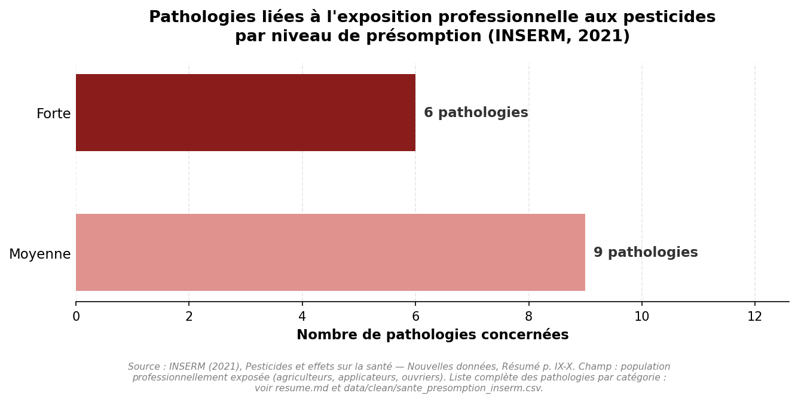
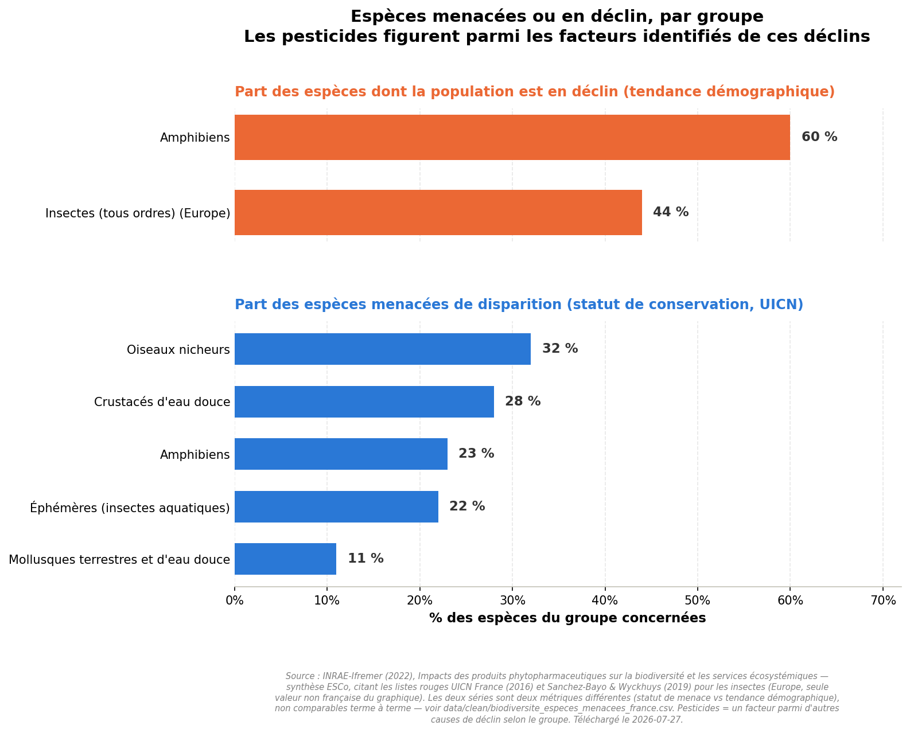

Deux expertises scientifiques collectives françaises
Inserm (2021) et INRAE-Ifremer (2022)
Ce sont les deux chiffres de l'expertise collective de l'Inserm sur les pesticides. Pas une tribune, pas une opinion : plus de 5 300 documents scientifiques analysés par un groupe pluridisciplinaire — épidémiologie, toxicologie, expologie, sociologie.
Chez les personnes professionnellement exposées — agriculteurs, applicateurs, ouvriers de l'industrie phytosanitaire — l'expertise établit un niveau de présomption (le terme employé par le rapport lui-même) pour chaque pathologie étudiée.

Source : Inserm (2021), "Pesticides et effets sur la santé — Nouvelles données", résumé p. IX-X
Ceux qui manipulent ces produits sont ceux qui les prennent en pleine figure. Les agriculteurs ne sont pas les accusés de cette histoire : ils en sont les premiers exposés.
L'expertise collective INRAE-Ifremer (2022, 138 pages, ~4 500 références) identifie les pesticides comme l'une des causes majeures du déclin de plusieurs groupes d'espèces en France, en interaction avec d'autres pressions (intensification agricole, homogénéisation des paysages, destruction d'habitats, changement climatique).

Source : INRAE-Ifremer (2022), listes rouges UICN France (2016) et Sanchez-Bayo & Wyckhuys (2019) pour les insectes (Europe)
Aucun des deux rapports n'attribue ces impacts à un seul produit : ce sont des expertises transversales, toutes familles de pesticides confondues, qui pèsent le niveau de preuve scientifique disponible plutôt que d'affirmer une causalité automatique.